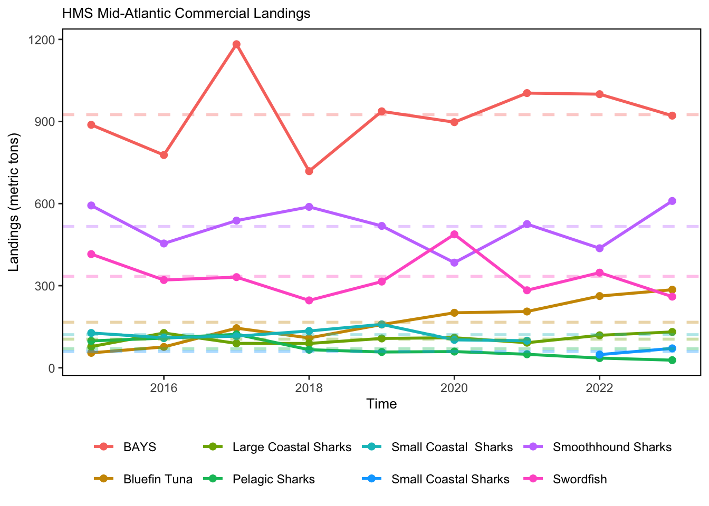
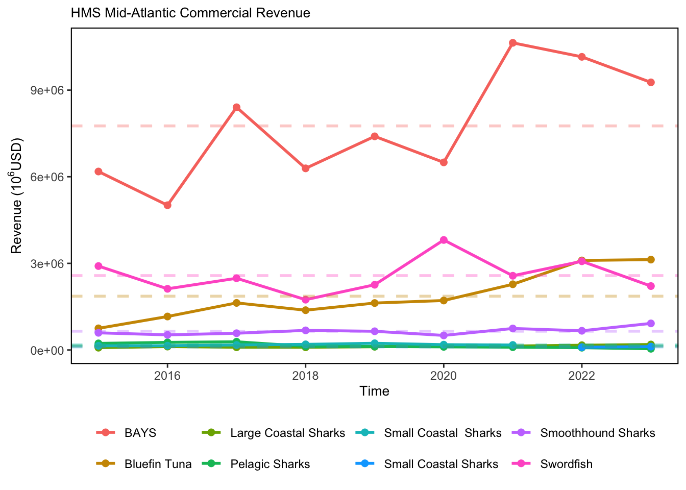
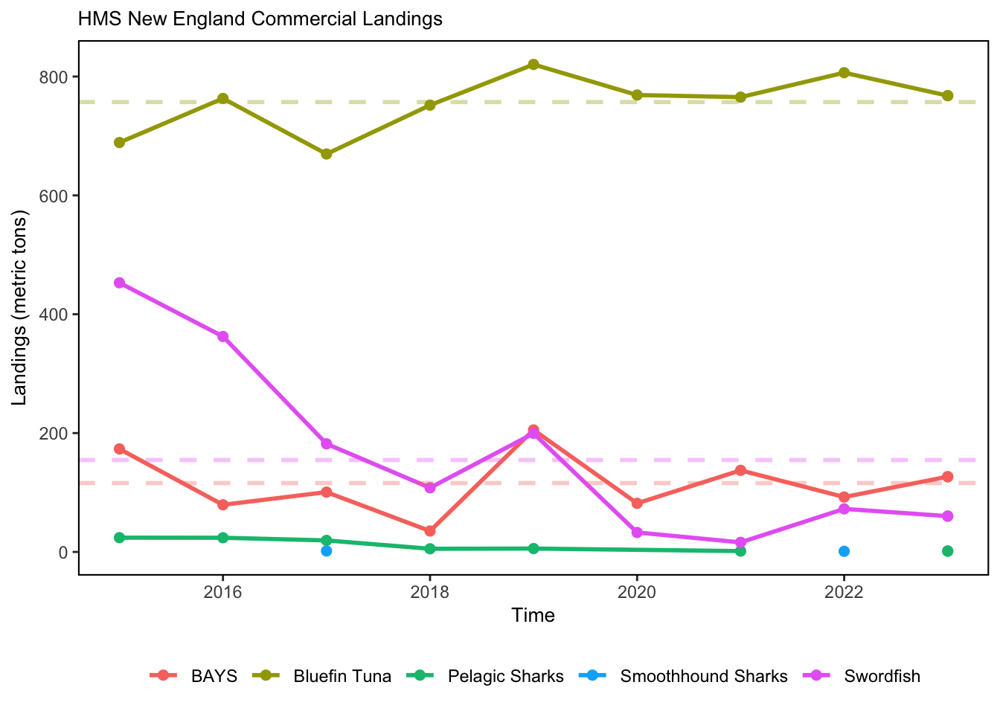
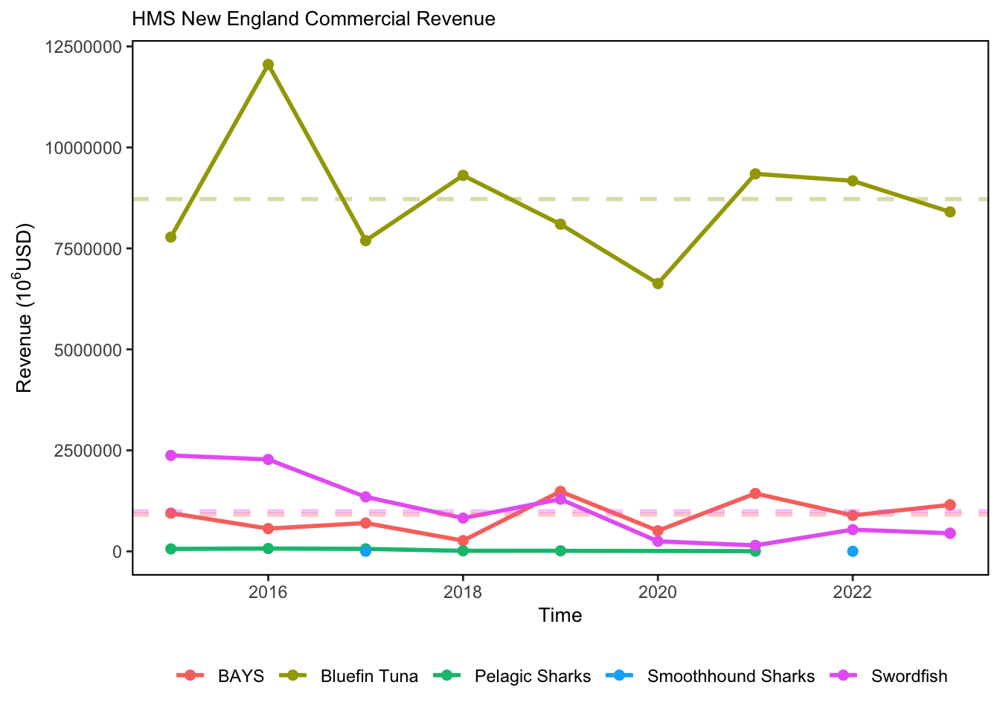

SMART Indicator Report: Highly Migratory Species Landings
2 Indicator name
Highly Migratory Species Landings
Includes variable(s): BAYS_HMS Landings, BAYS_HMS Revenue, Bluefin Tuna_HMS Landings, Bluefin Tuna_HMS Revenue, Large Coastal Sharks_HMS Landings, Large Coastal Sharks_HMS Revenue, Pelagic Sharks_HMS Landings, Pelagic Sharks_HMS Revenue, Small Coastal Sharks_HMS Landings, Small Coastal Sharks_HMS Revenue, Small Coastal Sharks_HMS Landings, Small Coastal Sharks_HMS Revenue, Smoothhound Sharks_HMS Landings, Smoothhound Sharks_HMS Revenue, Swordfish_HMS Landings, Swordfish_HMS Revenue
3 Indicator brief description
Aggregated Atlantic HMS landings data prepared for the Fisheries of the United States (FUS) report, spanning 2015-2023.
4 Indicator visualization
Data are provided to SOE editors to generate the visualizations.

5 Indicator documentation
5.1 Are indicators available for others to use (data downloadable)?
Yes
5.1.1 Where can indicators be found?
Data: https://noaa-edab.github.io/ecodata/index.html
Description: https://noaa-edab.github.io/catalog/hms_landings.html
Technical documentation: https://noaa-edab.github.io/tech-doc/hms_landings.html
5.1.2 How often are they updated? Are future updates likely?
[need sequential look at datasets for update frequency. Future requires judgement]
5.1.3 Who is the contact?
Jennifer Cudney (jennifer.cudney@noaa.gov)
5.2 Gather indicator statistics
5.2.1 Units
Indicator | Units |
|---|---|
BAYS_HMS Landings | no Units field |
BAYS_HMS Revenue | no Units field |
Bluefin Tuna_HMS Landings | no Units field |
Bluefin Tuna_HMS Revenue | no Units field |
Large Coastal Sharks_HMS Landings | no Units field |
Large Coastal Sharks_HMS Revenue | no Units field |
Pelagic Sharks_HMS Landings | no Units field |
Pelagic Sharks_HMS Revenue | no Units field |
Small Coastal Sharks_HMS Landings | no Units field |
Small Coastal Sharks_HMS Revenue | no Units field |
Small Coastal Sharks_HMS Landings | no Units field |
Small Coastal Sharks_HMS Revenue | no Units field |
Smoothhound Sharks_HMS Landings | no Units field |
Smoothhound Sharks_HMS Revenue | no Units field |
Swordfish_HMS Landings | no Units field |
Swordfish_HMS Revenue | no Units field |
5.2.2 Length of time series, start and end date, periodicity
General overview: Annual
Indicator specifics:
Indicator | EPU | StartYear | EndYear | NumYears | MissingYears |
|---|---|---|---|---|---|
BAYS_HMS Landings | MAB | 2015 | 2023 | 9 | 0 |
BAYS_HMS Landings | NE | 2015 | 2023 | 9 | 0 |
BAYS_HMS Revenue | MAB | 2015 | 2023 | 9 | 0 |
BAYS_HMS Revenue | NE | 2015 | 2023 | 9 | 0 |
Bluefin Tuna_HMS Landings | MAB | 2015 | 2023 | 9 | 0 |
Bluefin Tuna_HMS Landings | NE | 2015 | 2023 | 9 | 0 |
Bluefin Tuna_HMS Revenue | MAB | 2015 | 2023 | 9 | 0 |
Bluefin Tuna_HMS Revenue | NE | 2015 | 2023 | 9 | 0 |
Large Coastal Sharks_HMS Landings | MAB | 2015 | 2023 | 9 | 0 |
Large Coastal Sharks_HMS Revenue | MAB | 2015 | 2023 | 9 | 0 |
Pelagic Sharks_HMS Landings | MAB | 2015 | 2023 | 9 | 0 |
Pelagic Sharks_HMS Landings | NE | 2015 | 2023 | 7 | 2 |
Pelagic Sharks_HMS Revenue | MAB | 2015 | 2023 | 9 | 0 |
Pelagic Sharks_HMS Revenue | NE | 2015 | 2021 | 6 | 1 |
Small Coastal Sharks_HMS Landings | MAB | 2015 | 2021 | 7 | 0 |
Small Coastal Sharks_HMS Revenue | MAB | 2015 | 2021 | 7 | 0 |
Small Coastal Sharks_HMS Landings | MAB | 2022 | 2023 | 2 | 0 |
Small Coastal Sharks_HMS Revenue | MAB | 2022 | 2023 | 2 | 0 |
Smoothhound Sharks_HMS Landings | MAB | 2015 | 2023 | 9 | 0 |
Smoothhound Sharks_HMS Landings | NE | 2017 | 2022 | 2 | 4 |
Smoothhound Sharks_HMS Revenue | MAB | 2015 | 2023 | 9 | 0 |
Smoothhound Sharks_HMS Revenue | NE | 2017 | 2022 | 2 | 4 |
Swordfish_HMS Landings | MAB | 2015 | 2023 | 9 | 0 |
Swordfish_HMS Landings | NE | 2015 | 2023 | 9 | 0 |
Swordfish_HMS Revenue | MAB | 2015 | 2023 | 9 | 0 |
Swordfish_HMS Revenue | NE | 2015 | 2023 | 9 | 0 |
5.2.3 Spatial location, scale and extent
General overview: Regionally by EPU
Indicator specifics:
Indicator | EPU |
|---|---|
BAYS_HMS Landings | MAB |
BAYS_HMS Landings | NE |
BAYS_HMS Revenue | MAB |
BAYS_HMS Revenue | NE |
Bluefin Tuna_HMS Landings | MAB |
Bluefin Tuna_HMS Landings | NE |
Bluefin Tuna_HMS Revenue | MAB |
Bluefin Tuna_HMS Revenue | NE |
Large Coastal Sharks_HMS Landings | MAB |
Large Coastal Sharks_HMS Revenue | MAB |
Pelagic Sharks_HMS Landings | MAB |
Pelagic Sharks_HMS Landings | NE |
Pelagic Sharks_HMS Revenue | MAB |
Pelagic Sharks_HMS Revenue | NE |
Small Coastal Sharks_HMS Landings | MAB |
Small Coastal Sharks_HMS Revenue | MAB |
Small Coastal Sharks_HMS Landings | MAB |
Small Coastal Sharks_HMS Revenue | MAB |
Smoothhound Sharks_HMS Landings | MAB |
Smoothhound Sharks_HMS Landings | NE |
Smoothhound Sharks_HMS Revenue | MAB |
Smoothhound Sharks_HMS Revenue | NE |
Swordfish_HMS Landings | MAB |
Swordfish_HMS Landings | NE |
Swordfish_HMS Revenue | MAB |
Swordfish_HMS Revenue | NE |
5.3 Are methods clearly documented to obtain source data and calculate indicators?
Yes
5.3.1 Can the indicator be calculated from current documentation?
Data, from 2015-2023, were processed for Fisheries of the United States and then aggregated by regions to avoid confidentiality issues. Data of Atlantic shark, swordfish, bigeye tuna, albacore tuna, yellowfin tuna and skipjack tuna were initially extracted from our eDealer database and the Caribbean Commercial Vessel logbook database. Additional landings of these HMS not in this dataset were collected from ACCSP, GulfFIN, and the SEFSC Atlantic HMS vessel logbook databases. Bluefin tuna landings data from the Bluefin Tuna Dealer reports in SAFIS were also extracted and combined with the eDealer data for other HMS. Procedures of quality assurance were conducted. Duplicate records were removed from the data. This may occur from multiple submissions of reports by the same dealer. It may also occur when two or more dealers report the same landings in “Packing” situations. While most vessels immediately sell their catch to the dealer at their port of landing, some vessels sell their catch to a dealer(s) in another location. Transport to alternate locations requires processing of the fish to preserve quality. This processing activity is done by the dealer at the port of landing and is referred to as ““Packing”“. Differences in federal and state reporting requirements and definitions of who is considered the “dealer” of the product, and thus ultimately responsible for submitting the landings report, may result in multiple reports being created for the same landings. These duplicate reports need to be accounted for when summarizing the data to reflect accurate landings prior to summarizing the data for analyses, including the Fisheries of the United States. All reported landings were converted to live weights using conversion ratios appropriate for the species/species group and reported grade of the product. Shark fins, shark heads, shark tails, and shark bellies were not reported to live weight as these weights are included in the converted whole weight of the reported shark landing. States, where the landings occurred, were grouped into ‘ecological production units’ (EPUs), as defined by GARFO staff. “New England” includes Maine, New Hampshire and Massachusetts, as well as landings from Canada. The “Mid-Atlantic Bight” includes states from Rhode Island to North Carolina. Landings in states outside of these EPUs were excluded from further summaries. Seven HMS Management Groups represent 26 highly migratory species in the dataset. HMS Management Groups may include a single species or a group of species. HMS groups include “Bluefin Tuna”, “BAYS”, “Swordfish”, “Large Coastal Sharks”, “Small Coastal Sharks”, “Pelagic Sharks”, “Smoothhound Sharks”. “BAYS” includes bigeye, albacore, yellowfin and skipjack tunas. “Large Coastal Sharks” includes blacktip, bull, great hammerhead, scalloped hammerhead, smooth hammerhead, lemon, nurse, sandbar, silky, spinner, and tiger sharks. “Small Coastal Sharks” includes Atlantic sharpnose, blacknose, bonnethead, finetooth sharks. “Pelagic Sharks” includes blue, porbeagle, shortfin mako, and thresher sharks. “Smoothhound Sharks” includes smooth dogfish shark. On July 1, 2023, a zero-retention limit went into effect for shortfin mako sharks; therefore, 2023 landings of shortfin mako between January and June were considered “Pelagic Sharks” and in July and after were considered “Prohibited shark species”. No landings of shortfin mako were reported after June 2023 in the northeast region. Price per pound was used to determine the ex-vessel value. For landings with a reported disposition of “Food” and prices per pound reported as “N/A”, 0, $0.01 or left blank, average prices were calculated for each species and state. Those average prices replaced the missing values to determine landings revenue. Revenue from sales to the aquarium trade were also excluded to avoid extreme values associated with shipping live specimens.
5.4 Are indicator underlying source data linked or easy to find?
Source data are NOT publicly available. Confidential data may be released in “any aggregate or summary form which does not directly or indirectly disclose the identity or business of any person who submits such information” (Magnuson-Stevens Act § 402(b)(3); 16 U.S.C. 1881a(b)(3)). NOAA Fisheries presents such information only if it can be aggregated or summarized at a temporal and/or spatial level to maintain confidentiality of individuals, businesses, and related business information. Data that has been properly screened to meet data standards and confidentiality are publicly available via the Fisheries of the United States (FUS) landings portal. Canadian landings information, which are included in this analysis, are not included in the FUS portal (https://www.fisheries.noaa.gov/national/sustainable-fisheries/commercial-fisheries-landings). Data should be aggregated to protect data confidentiality (raw data are lumped by year and species). Data were included in the final summary unless there were 2 or less dealers involved in the landings, 2 or less vessels, or if any one dealer or vessel purchased/landed more than 2/3 of the total amount for that data unit. Please email jennifer.cudney@noaa.gov for further information and queries of source data.
5.4.1 Where are source data stored?
Data from eDealer database (https://www.fisheries.noaa.gov/atlantic-highly-migratory-species/atlantic-highly-migratory-species-dealer-reporting) and Bluefin Tuna Dealer reports on SAFIS (https://www.accsp.org/what-we-do/safis/). The eDealer data were supplemented with ACCSP records, GulfFIN records, and pelagic and coastal fisheries vessel logbook catches reported to SEFSC for which no dealer reports were submitted.
5.4.2 How/by whom are source data updated? Are future updates likely?
Jennifer Cudney jennifer.cudney@noaa.gov
[likelihood of source data updates requires judgement, enter by hand]
6 Indicator analysis/testing or history of use
6.1 What decision or advice processes are the indicators currently used in?
This indicator provides a comprehensive summary of commercial landings information for HMS fisheries that target or retain tunas, swordfish, and sharks. These data can be evaluated independently, and can also be included in overall estimates of commercial fisheries landings in the northeast region.
6.2 What implications of the indicators are currently listed?
HMS landings data are summarized and presented in the annual HMS Stock Assessment and Fishery Evaluation (SAFE) report. In 2021 the International Commission for the Conservation of Atlantic Tunas (ICCAT) finalized recommendations for a two-year retention ban for shortfin mako (ICCAT Rec. 21-09), which will also affect total overall landings of pelagic sharks in coming years.
6.3 Do target, limit, or threshold values already exist for the indicator?
[Fill by hand; if not in key results or implications, likely does not exist]
6.4 Have the indicators been tested to ensure they respond proportionally to a change in the underlying process?
[Fill by hand; if not in introduction, key results, or implications, likely not tested]
7 Comments
[Fill below by hand once above data complete]
7.1 Additional potential links to management in addition to uses listed above
7.2 What additional work would be needed for the Council to use the indicator?
7.3 What issues are caused if there is a gap or delay in data underlying the indicator